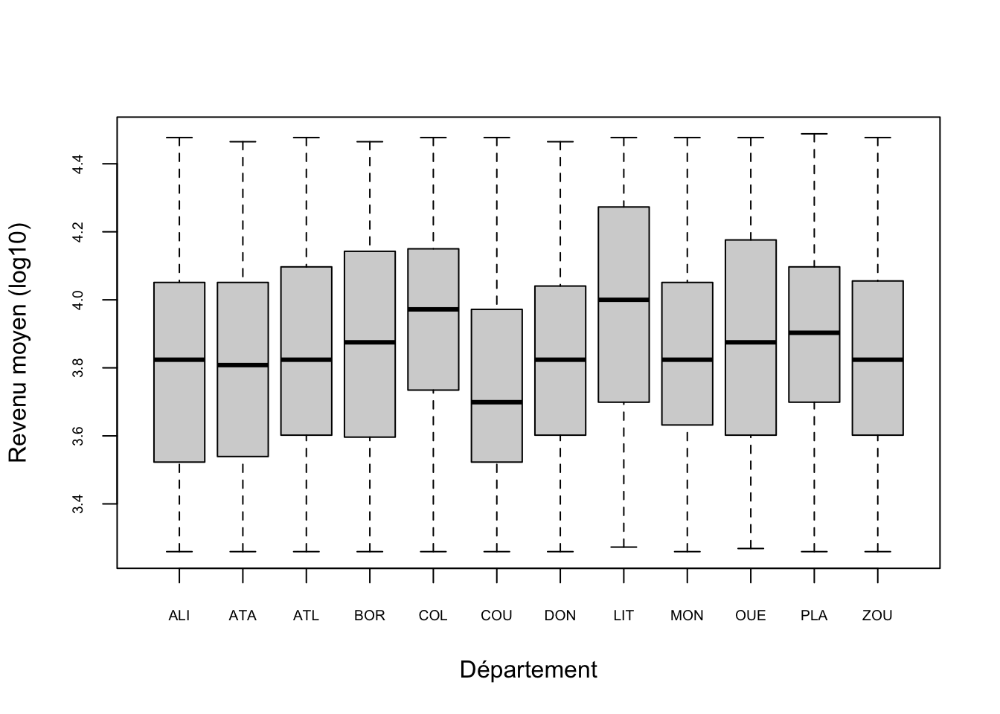
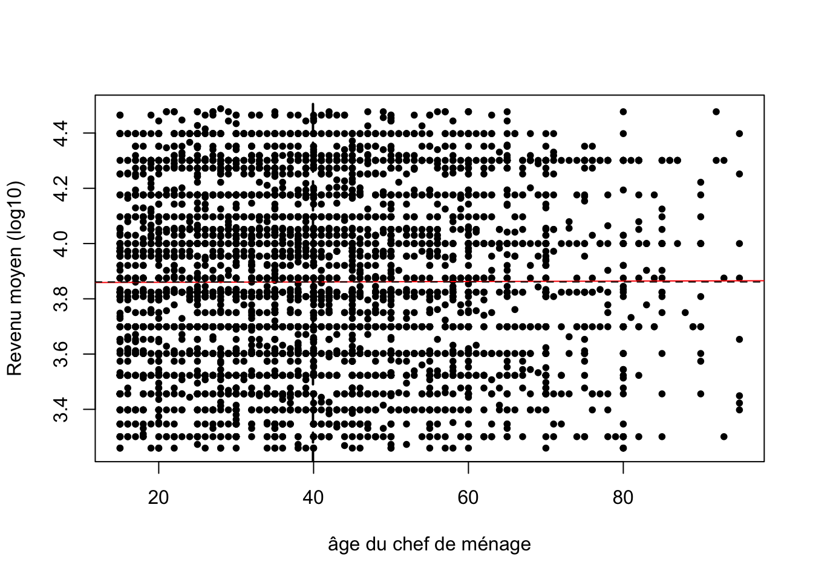

Application n°2
library(knitr)
library(dplyr, quietly = TRUE,warn.conflicts = F)
library(car,warn.conflicts = F,quietly=T)
library(readxl)
library(sf)
library(mapsf)L’objectif de la présente est d’analyser un tableau de données d’enquête permettant de décrire les revenus des ménages et un certain nombre d’indicateurs de confort en fonction d’attributs du chef de ménage ou du ménage proprement dit.
(…)
A. Données
(…)
Importation
On importe les données depuis Excel
don <- read_excel("FIN-BENIN-2018/data/select.xls",sheet = "data")
kable(head(don), caption = "Premières lignes du tableau")| hou_wgt | hou_mbr | hou_roo | hou_inc | hou_agr | hea | hea_age | hea_sex | loc_dep | loc_urb | loc_rur |
|---|---|---|---|---|---|---|---|---|---|---|
| 117.5442 | 8 | 1 | 20000 | Only | TRUE | 65 | Female | ALIBORI | FALSE | TRUE |
| 116.5713 | 4 | 1 | 20000 | Only | TRUE | 40 | Male | ALIBORI | FALSE | TRUE |
| 116.5713 | 9 | 3 | 125000 | Only | TRUE | 35 | Male | ALIBORI | FALSE | TRUE |
| 207.5032 | 7 | 3 | 20000 | Only | TRUE | 28 | Male | ALIBORI | FALSE | TRUE |
| 207.5032 | 7 | 4 | 20000 | Only | TRUE | 20 | Male | ALIBORI | FALSE | TRUE |
| 566.2480 | 7 | 5 | 20000 | Only | TRUE | 25 | Male | ALIBORI | TRUE | FALSE |
Liste des variables
meta <- read_excel("FIN-BENIN-2018/data/select.xls",sheet = "meta")
kable(meta,caption = "Liste des variables")| Code | Def |
|---|---|
| hou_wgt | poids statistique du ménage |
| hou_mbr | nombre de membres du ménage |
| hou_roo | nombre de pièces servant de chambre à coucher |
| hou_inc | revenu global du ménage en CFA |
| hou_agr | revenu d’activité agricole (exclusive, partielle, absente) |
| hea | le répondant est chef du ménage (TRUE/FALSE) |
| hea_age | âge du chef de ménage |
| hea_sex | sexe du chef de ménage |
| loc_dep | département de résidence du ménage |
| loc_urb | milieu urbain (TRUE/FALSE) |
| loc_rur | milieu rural (TRUE/FALSE) |
N.B.1: Nous avons éliminé du tableau initial les individus dont le revenu par personne se situait dans les 5% les plus élevés et les 5% les plus faibles, ainsi que les données incomplètes. Il ne reste donc plus que 4685 observations contre un peu plus de 6000 dans le tableau initial. La pondération n’est donc plus correcte pour effectuer des redressements et elle ne sera pas utilisée.
N.B.2: Le revenu total du ménage a été obtenu soit de façon absolue (la personne donne un chiffre unique), soit par tranche selon une grille de réponse. Dans ce dernier cas, nous avons pris comme valeur le centre de la tranche. Pour les tranches extrêmes nous avons alloué la valeur 20000 pour la modalité “moins de 40000” et la valeur 1000000 popur la modalité “plus de 750000”. Ceci entraîne donc une concentration artificielle des valeurs autour de 20000.
Ajout de nouvelles variables
Nous construisons à partir du tableau deux nouvelles variables :
- hou_inc_cap : revenu moyen par habitant d’un ménage
- hou_roo_occ : nombre d’individu par pièces de couchage
don$hou_inc_cap <- don$hou_inc/don$hou_mbr
don$hou_roo_occ <- don$hou_mbr/don$hou_rooSélection
On n’opère aucune sélection dans l’immédiat
sel<-donParamètres principaux
On résume rapidement les variables retenues
summary(sel) hou_wgt hou_mbr hou_roo hou_inc
Min. : 29.49 Min. : 1.000 Min. : 1.000 Min. : 2000
1st Qu.: 187.91 1st Qu.: 3.000 1st Qu.: 2.000 1st Qu.: 20000
Median : 259.77 Median : 5.000 Median : 2.000 Median : 20000
Mean : 296.17 Mean : 5.612 Mean : 2.555 Mean : 45208
3rd Qu.: 373.05 3rd Qu.: 7.000 3rd Qu.: 3.000 3rd Qu.: 75000
Max. :1374.73 Max. :45.000 Max. :22.000 Max. :1000000
hou_agr hea hea_age hea_sex
Length:4865 Length:4865 Min. :15.00 Length:4865
Class :character Class :character 1st Qu.:28.00 Class :character
Mode :character Mode :character Median :37.00 Mode :character
Mean :39.92
3rd Qu.:50.00
Max. :95.00
loc_dep loc_urb loc_rur hou_inc_cap
Length:4865 Length:4865 Length:4865 Min. : 1818
Class :character Class :character Class :character 1st Qu.: 4000
Mode :character Mode :character Mode :character Median : 6667
Mean : 9333
3rd Qu.:12500
Max. :30769
hou_roo_occ
Min. : 0.250
1st Qu.: 1.500
Median : 2.000
Mean : 2.444
3rd Qu.: 3.000
Max. :14.000 Fonds de carte
Nous disposons d’un fonds de carte (source : IPUMS) permettant de cartographier éventuellement les résultats de certaines analyses par département.
map<-st_read("FIN-BENIN-2018/shp/geo1_bj2013.shp", quiet=T)Il permet d’ores et déjà de repérer la position des départements
mf_map(map, type="typo",var="ADMIN_NAME")
mf_label(map,var = "DEPT2013" )
mf_layout(title = "Les 12 départements du Bénin",credits = "IPUMS",arrow = F,frame =T)
B. Variable dépendante
On se propose d’expliquer la variable hou_inc_cap qui mesure le revenu moyen des ménages
Forme de la distribution
Y<-sel$hou_inc_cap
labelY<-"Revenu moyen "
hist(Y, main=labelY,breaks = 6)
hist(log10(Y), main=labelY, xlab = "logarithme décimal", breaks=6)
La distribution est unimodale mais asymétrique à gauche. Après transformation logarithmique elle apparaît plus symétrique.
Valeurs exceptionnelles
boxplot(Y, main=labelY, horizontal=T)
boxplot(log(Y), main=labelY, horizontal=T, xlab = "Logarithme décimal")
La distribution comporte des valeurs exceptionnelles mais celles-ci disparaissent après transformation logarithmique.
Normalité
shapiro.test(Y)
Shapiro-Wilk normality test
data: Y
W = 0.87393, p-value < 2.2e-16shapiro.test(log(Y))
Shapiro-Wilk normality test
data: log(Y)
W = 0.9698, p-value < 2.2e-16La distribution n’est pas gaussienne et elle ne le devient pas non plus après transformation logarithmique en raison de la cocnentration des valeurs autour de 20000 (Cf. introduction)
On décide de poursuivre l’analyse en utilisant désormais le log. du revenu
Y<-log10(sel$hou_inc_cap)
labelY<-"Revenu moyen (log10)"C. Analyse de variance
On va tester l’effet de variables indépendantes qualitatives
modèle 1 : Le revenu est-il plus faible pour les activités agricoles ?
Q1<-as.factor(sel$hou_agr)
levels(Q1)<-c("Agricole","Mixte","Non-agricole")
labelQ1 = "Occupation agricole"
plot(Y~Q1,cex.axis=0.6, xlab=labelQ1, ylab=labelY)
mod<-lm(log(Y)~Q1)
summary(mod)
Call:
lm(formula = log(Y) ~ Q1)
Residuals:
Min 1Q Median 3Q Max
-0.186343 -0.059905 0.005955 0.061417 0.171092
Coefficients:
Estimate Std. Error t value Pr(>|t|)
(Intercept) 1.367959 0.001752 780.623 <2e-16 ***
Q1Mixte -0.040071 0.002636 -15.203 <2e-16 ***
Q1Non-agricole -0.027968 0.002868 -9.753 <2e-16 ***
---
Signif. codes: 0 '***' 0.001 '**' 0.01 '*' 0.05 '.' 0.1 ' ' 1
Residual standard error: 0.07909 on 4862 degrees of freedom
Multiple R-squared: 0.04824, Adjusted R-squared: 0.04785
F-statistic: 123.2 on 2 and 4862 DF, p-value: < 2.2e-16anova(mod)Analysis of Variance Table
Response: log(Y)
Df Sum Sq Mean Sq F value Pr(>F)
Q1 2 1.5417 0.77084 123.23 < 2.2e-16 ***
Residuals 4862 30.4137 0.00626
---
Signif. codes: 0 '***' 0.001 '**' 0.01 '*' 0.05 '.' 0.1 ' ' 1Modèle 2 : Le revenu est-il plus faible si le chef de ménages est une femme ?
Q2<-as.factor(sel$hea_sex)
levels(Q2)[1] "Female" "Male" levels(Q2)<-c("Femme","Homme")
labelQ2 = "Sexe du chef de ménage"
plot(Y~Q2,cex.axis=0.6, xlab=labelQ2, ylab=labelY)
mod<-lm(Y~Q2)
summary(mod)
Call:
lm(formula = Y ~ Q2)
Residuals:
Min 1Q Median 3Q Max
-0.61386 -0.25370 -0.01998 0.22342 0.63323
Coefficients:
Estimate Std. Error t value Pr(>|t|)
(Intercept) 3.843891 0.006919 555.587 <2e-16 ***
Q2Homme 0.029602 0.009063 3.266 0.0011 **
---
Signif. codes: 0 '***' 0.001 '**' 0.01 '*' 0.05 '.' 0.1 ' ' 1
Residual standard error: 0.3117 on 4863 degrees of freedom
Multiple R-squared: 0.002189, Adjusted R-squared: 0.001984
F-statistic: 10.67 on 1 and 4863 DF, p-value: 0.001098anova(mod)Analysis of Variance Table
Response: Y
Df Sum Sq Mean Sq F value Pr(>F)
Q2 1 1.04 1.03659 10.668 0.001098 **
Residuals 4863 472.54 0.09717
---
Signif. codes: 0 '***' 0.001 '**' 0.01 '*' 0.05 '.' 0.1 ' ' 1Modèle 3 : Le revenu est-il plus fort en ville
Q3<-as.factor(sel$loc_urb)
levels(Q3)<-c("Rural","Urbain")
labelQ3 = "Milieu urbain ou rural"
plot(Y~Q3,cex.axis=0.6, xlab=labelQ3, ylab=labelY)
mod<-lm(Y~Q3)
summary(mod)
Call:
lm(formula = Y ~ Q3)
Residuals:
Min 1Q Median 3Q Max
-0.65646 -0.21713 0.00772 0.23933 0.67193
Coefficients:
Estimate Std. Error t value Pr(>|t|)
(Intercept) 3.816185 0.005955 640.78 <2e-16 ***
Q3Urbain 0.099912 0.008878 11.25 <2e-16 ***
---
Signif. codes: 0 '***' 0.001 '**' 0.01 '*' 0.05 '.' 0.1 ' ' 1
Residual standard error: 0.3081 on 4863 degrees of freedom
Multiple R-squared: 0.02538, Adjusted R-squared: 0.02518
F-statistic: 126.6 on 1 and 4863 DF, p-value: < 2.2e-16anova(mod)Analysis of Variance Table
Response: Y
Df Sum Sq Mean Sq F value Pr(>F)
Q3 1 12.02 12.0196 126.64 < 2.2e-16 ***
Residuals 4863 461.56 0.0949
---
Signif. codes: 0 '***' 0.001 '**' 0.01 '*' 0.05 '.' 0.1 ' ' 1Modèle 4 : Le revenu varie-t-il entre les départements ?
Q4<-as.factor(substr(sel$loc_dep,1,3))
labelQ4 <- "Département"
plot(Y~Q4,cex.axis=0.6, xlab=labelQ4, ylab=labelY)
mod<-lm(Y~Q4)
summary(mod)
Call:
lm(formula = Y ~ Q4)
Residuals:
Min 1Q Median 3Q Max
-0.71570 -0.23374 -0.01139 0.24030 0.73475
Coefficients:
Estimate Std. Error t value Pr(>|t|)
(Intercept) 3.804213 0.016611 229.018 < 2e-16 ***
Q4ATA 0.002192 0.022630 0.097 0.922843
Q4ATL 0.068936 0.024014 2.871 0.004115 **
Q4BOR 0.052400 0.022342 2.345 0.019049 *
Q4COL 0.128494 0.021526 5.969 2.55e-09 ***
Q4COU -0.061842 0.021902 -2.824 0.004769 **
Q4DON 0.024778 0.022979 1.078 0.280972
Q4LIT 0.184493 0.022630 8.152 4.50e-16 ***
Q4MON 0.055495 0.022135 2.507 0.012205 *
Q4OUE 0.082235 0.021745 3.782 0.000158 ***
Q4PLA 0.099330 0.022124 4.490 7.30e-06 ***
Q4ZOU 0.024275 0.023743 1.022 0.306644
---
Signif. codes: 0 '***' 0.001 '**' 0.01 '*' 0.05 '.' 0.1 ' ' 1
Residual standard error: 0.3058 on 4853 degrees of freedom
Multiple R-squared: 0.04146, Adjusted R-squared: 0.03929
F-statistic: 19.08 on 11 and 4853 DF, p-value: < 2.2e-16anova(mod)Analysis of Variance Table
Response: Y
Df Sum Sq Mean Sq F value Pr(>F)
Q4 11 19.64 1.78506 19.084 < 2.2e-16 ***
Residuals 4853 453.94 0.09354
---
Signif. codes: 0 '***' 0.001 '**' 0.01 '*' 0.05 '.' 0.1 ' ' 1Analyse de variance à plusieurs facteurs : Y = f(Q1,Q2,Q3,Q4)
mod<-lm(Y~Q1+Q2+Q3+Q4)
summary(mod)
Call:
lm(formula = Y ~ Q1 + Q2 + Q3 + Q4)
Residuals:
Min 1Q Median 3Q Max
-0.73364 -0.23169 -0.00707 0.23119 0.75936
Coefficients:
Estimate Std. Error t value Pr(>|t|)
(Intercept) 3.874583 0.019728 196.400 < 2e-16 ***
Q1Mixte -0.132647 0.012259 -10.820 < 2e-16 ***
Q1Non-agricole -0.089321 0.012192 -7.327 2.75e-13 ***
Q2Homme 0.038037 0.008806 4.320 1.59e-05 ***
Q3Urbain 0.049039 0.009801 5.003 5.84e-07 ***
Q4ATA -0.002996 0.022300 -0.134 0.893143
Q4ATL -0.006768 0.024203 -0.280 0.779763
Q4BOR 0.026666 0.022011 1.212 0.225757
Q4COL 0.103906 0.021213 4.898 9.99e-07 ***
Q4COU -0.074447 0.021591 -3.448 0.000569 ***
Q4DON -0.002437 0.022650 -0.108 0.914323
Q4LIT 0.044981 0.024457 1.839 0.065948 .
Q4MON -0.001256 0.022157 -0.057 0.954810
Q4OUE -0.018882 0.022529 -0.838 0.402009
Q4PLA 0.045721 0.022167 2.063 0.039204 *
Q4ZOU -0.033928 0.023782 -1.427 0.153760
---
Signif. codes: 0 '***' 0.001 '**' 0.01 '*' 0.05 '.' 0.1 ' ' 1
Residual standard error: 0.2998 on 4849 degrees of freedom
Multiple R-squared: 0.07991, Adjusted R-squared: 0.07706
F-statistic: 28.07 on 15 and 4849 DF, p-value: < 2.2e-16Anova(mod, type="III")Anova Table (Type III tests)
Response: Y
Sum Sq Df F value Pr(>F)
(Intercept) 3466.2 1 38573.066 < 2.2e-16 ***
Q1 10.8 2 60.295 < 2.2e-16 ***
Q2 1.7 1 18.659 1.594e-05 ***
Q3 2.2 1 25.032 5.837e-07 ***
Q4 10.1 11 10.215 < 2.2e-16 ***
Residuals 435.7 4849
---
Signif. codes: 0 '***' 0.001 '**' 0.01 '*' 0.05 '.' 0.1 ' ' 1D. Régression linéaire
On reprend la même variable dépendante.
Modèle 1 : La richesse par habitant (log) dépend-elle de l’âge
X1<-sel$hea_age
labelX1 <-"âge du chef de ménage"
mod<-lm(Y~X1)
summary(mod)
Call:
lm(formula = Y ~ X1)
Residuals:
Min 1Q Median 3Q Max
-0.60453 -0.25856 -0.03573 0.23614 0.62788
Coefficients:
Estimate Std. Error t value Pr(>|t|)
(Intercept) 3.858e+00 1.182e-02 326.368 <2e-16 ***
X1 7.561e-05 2.741e-04 0.276 0.783
---
Signif. codes: 0 '***' 0.001 '**' 0.01 '*' 0.05 '.' 0.1 ' ' 1
Residual standard error: 0.3121 on 4863 degrees of freedom
Multiple R-squared: 1.565e-05, Adjusted R-squared: -0.00019
F-statistic: 0.0761 on 1 and 4863 DF, p-value: 0.7827plot(X1,Y, cex=1, col="black",pch=20, xlab=labelX1,ylab=labelY)
abline(mod,col="red")
abline(v=mean(X1),lty=2, lwd=2)
abline(h=mean(Y),lty=2)
EXERCICES
Refaire l’analyse avec la variable Y = suroccupation des logements